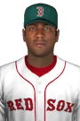

MLB · SP
Pedro Astacio
- Team
 Boston Red Sox
Boston Red Sox- Position
- SP
- Bats/Throws
- R/R
- Height/Weight
- 6'2", 190 lb
- Born
- Nov 28, 1969 in Hato Mayor, DOM
- Age
- 32
- Uniform
- #36
- Salary
- $5,500,000
2002 pitching
| Team | Lg | G | GS | W | L | SV | IP | H | R | ER | BB | K | HR | ERA | WHIP | HLD | BS | QS | CG | SHO |
|---|---|---|---|---|---|---|---|---|---|---|---|---|---|---|---|---|---|---|---|---|
| BOS | MLB | 9 | 9 | 3 | 4 | 0 | 51.1 | 43 | 23 | 19 | 18 | 37 | 8 | 3.33 | 1.19 | 0 | 0 | 4 | 1 | 0 |
2002 pitching, advanced
| Team | Lg | BF | Pit | Pit/IP | Opp AVG | BABIP | HBP | WP | IR | IR scored | K/9 | BB/9 | HR/9 | K% | BB% | K-BB% | FIP | ERA+ | GB% | WPA | WAR |
|---|---|---|---|---|---|---|---|---|---|---|---|---|---|---|---|---|---|---|---|---|---|
| BOS | MLB | 214 | 790 | 15.4 | .224 | .238 | 4 | 0 | 0 | - | 6.5 | 3.2 | 1.4 | 17.3% | 8.4% | 8.9% | 4.62 | 122 | 59.4% | 0.31 | 0.4 |
Pitching splits
| Split | G | GS | W | L | SV | IP | H | R | ER | BB | K | HR | ERA | WHIP | Opp AVG | K/9 | BB/9 | HR/9 | FIP |
|---|---|---|---|---|---|---|---|---|---|---|---|---|---|---|---|---|---|---|---|
| Home | 5 | 5 | 3 | 1 | 0 | 29.2 | 17 | 4 | 3 | 9 | 21 | 2 | 0.91 | 0.88 | .168 | 6.4 | 2.7 | 0.6 | 3.23 |
| Road | 4 | 4 | 0 | 3 | 0 | 21.2 | 26 | 19 | 16 | 9 | 16 | 6 | 6.65 | 1.62 | .286 | 6.6 | 3.7 | 2.5 | 6.54 |
By month
| Month | G | GS | W | L | SV | IP | H | R | ER | BB | K | HR | ERA | WHIP | Opp AVG | K/9 | BB/9 | HR/9 | FIP |
|---|---|---|---|---|---|---|---|---|---|---|---|---|---|---|---|---|---|---|---|
| April | 7 | 7 | 3 | 3 | 0 | 41.2 | 32 | 15 | 12 | 12 | 30 | 6 | 2.59 | 1.06 | .211 | 6.5 | 2.6 | 1.3 | 4.27 |
| May | 2 | 2 | 0 | 1 | 0 | 9.2 | 11 | 8 | 7 | 6 | 7 | 2 | 6.52 | 1.76 | .275 | 6.5 | 5.6 | 1.9 | 6.17 |
vs left- and right-handed batters
| Split | BF | AB | H | HR | BB | K | Opp AVG | Opp OBP | Opp SLG | K% | BB% |
|---|---|---|---|---|---|---|---|---|---|---|---|
| vs LHB | 104 | 93 | 19 | 2 | 9 | 16 | .204 | .288 | .301 | 15.4% | 8.7% |
| vs RHB | 110 | 99 | 24 | 6 | 9 | 21 | .242 | .318 | .465 | 19.1% | 8.2% |
Opponents by situation
| Situation | PA | AB | H | 2B | 3B | HR | RBI | BB | K | AVG | OBP | SLG | OPS |
|---|---|---|---|---|---|---|---|---|---|---|---|---|---|
| Bases empty | 131 | 118 | 25 | 4 | 0 | 4 | 4 | 9 | 23 | .212 | .290 | .347 | .638 |
| Runners on | 83 | 74 | 18 | 1 | 1 | 4 | 18 | 9 | 14 | .243 | .325 | .446 | .771 |
| Runners in scoring position | 47 | 41 | 10 | 1 | 0 | 3 | 15 | 6 | 7 | .244 | .340 | .488 | .828 |
| RISP, two outs | 17 | 15 | 2 | 1 | 0 | 0 | 1 | 2 | 6 | .133 | .235 | .200 | .435 |
| Innings 1-3 | 102 | 89 | 19 | 3 | 0 | 5 | 13 | 10 | 21 | .213 | .314 | .416 | .729 |
| Innings 4-6 | 77 | 69 | 14 | 2 | 0 | 3 | 8 | 7 | 10 | .203 | .286 | .362 | .648 |
| Innings 7-9 | 35 | 34 | 10 | 0 | 1 | 0 | 1 | 1 | 6 | .294 | .314 | .353 | .667 |
Situational splits are rebuilt from every plate appearance in the export (base/out state when the PA began). "RBI" counts runs batted in on that PA.
2002 pitching game log
| Date | Opp | Score | Dec | IP | H | R | ER | BB | K | HR | BF | PC | GB | FB | QS | WPA | |
|---|---|---|---|---|---|---|---|---|---|---|---|---|---|---|---|---|---|
| May 11 | @DET | L 4-7 | GS | L | 2.1 | 4 | 6 | 5 | 5 | 2 | 1 | 18 | 66 | 2 | 2 | -0.494 | |
| May 5 | @BrGo | L 10-11 | GS | 7.1 | 7 | 2 | 2 | 1 | 5 | 1 | 29 | 107 | 8 | 8 | QS | 0.196 | |
| Apr 30 | vsARI | W 2-1 | GS | W | 9.0 | 4 | 1 | 1 | 2 | 3 | 1 | 31 | 106 | 13 | 9 | QS | 0.601 |
| Apr 25 | vsSFS | L 0-4 | GS | L | 5.0 | 4 | 1 | 1 | 1 | 4 | 1 | 19 | 74 | 8 | 2 | 0.075 | |
| Apr 21 | @MIL | L 3-7 | GS | L | 5.0 | 10 | 7 | 5 | 1 | 1 | 2 | 28 | 107 | 7 | 6 | -0.453 | |
| Apr 16 | @HOU | L 2-5 | GS | L | 7.0 | 5 | 4 | 4 | 2 | 8 | 2 | 28 | 109 | 9 | 2 | -0.152 | |
| Apr 11 | vsWCB | W 3-0 | GS | W | 7.0 | 3 | 0 | 0 | 4 | 8 | 0 | 27 | 108 | 6 | 6 | QS | 0.276 |
| Apr 6 | vsOAK | W 3-2 | GS | 0.2 | 0 | 0 | 0 | 0 | 0 | 0 | 2 | 5 | 0 | 2 | 0.024 | ||
| Apr 1 | vsNYY | W 7-2 | GS | W | 8.0 | 6 | 2 | 1 | 2 | 6 | 0 | 32 | 108 | 10 | 6 | QS | 0.235 |
2002 fielding by position
| Team | Lg | Pos | G | GS | Inn | TC | PO | A | E | DP | FPct | ZR | Arm | Framing | SB | CS | CS% | PB |
|---|---|---|---|---|---|---|---|---|---|---|---|---|---|---|---|---|---|---|
| BOS | MLB | P | 9 | 9 | 51.1 | 5 | 1 | 4 | 0 | 1 | 1.000 | 0.1 | - | - | - | - | - | - |
ZR (zone rating), Arm and Framing are OOTP's runs-above-average figures. SB/CS/CS% are base stealers against him as a catcher.
Career pitching
| Year | Team | Lvl | G | GS | W | L | SV | IP | H | R | ER | BB | K | HR | ERA | WHIP | WAR |
|---|---|---|---|---|---|---|---|---|---|---|---|---|---|---|---|---|---|
| 1989 | T | Rookie | 12 | 12 | 7 | 3 | 0 | 76.0 | 77 | 30 | 27 | 12 | 52 | 3 | 3.20 | 1.17 | 2.1 |
| 1990 | - | A | 10 | 7 | 5 | 2 | 0 | 52.0 | 46 | 22 | 16 | 15 | 34 | 3 | 2.77 | 1.17 | 0.9 |
| 1990 | T | A | 8 | 8 | 1 | 5 | 0 | 47.0 | 54 | 39 | 33 | 23 | 41 | 3 | 6.32 | 1.64 | 0.8 |
| 1990 | T | Short-A | 3 | 3 | 2 | 0 | 0 | 20.0 | 9 | 8 | 4 | 4 | 22 | 0 | 1.80 | 0.65 | 0.9 |
| 1991 | SARe | AA | 19 | 19 | 4 | 11 | 0 | 113.0 | 142 | 67 | 60 | 39 | 62 | 9 | 4.78 | 1.60 | 1.2 |
| 1991 | T | A | 9 | 9 | 5 | 3 | 0 | 59.0 | 44 | 19 | 11 | 8 | 45 | 0 | 1.68 | 0.88 | 2.4 |
| 1992 | LAD | Majors | 11 | 11 | 5 | 5 | 0 | 82.0 | 80 | 23 | 18 | 20 | 43 | 1 | 1.98 | 1.22 | 2.2 |
| 1992 | - | AAA | 24 | 15 | 6 | 6 | 0 | 98.0 | 115 | 68 | 60 | 44 | 66 | 8 | 5.51 | 1.62 | 0.8 |
| 1993 | LAD | Majors | 31 | 31 | 14 | 9 | 0 | 186.1 | 165 | 80 | 74 | 68 | 122 | 14 | 3.57 | 1.25 | 3.0 |
| 1994 | LAD | Majors | 23 | 23 | 6 | 8 | 0 | 149.0 | 142 | 77 | 71 | 47 | 108 | 18 | 4.29 | 1.27 | 2.0 |
| 1995 | LAD | Majors | 48 | 11 | 7 | 8 | 0 | 104.0 | 103 | 53 | 49 | 29 | 80 | 12 | 4.24 | 1.27 | 1.2 |
| 1996 | LAD | Majors | 35 | 32 | 9 | 8 | 0 | 211.2 | 207 | 86 | 81 | 67 | 130 | 18 | 3.44 | 1.29 | 3.3 |
| 1997 | LAD | Majors | 26 | 24 | 7 | 9 | 0 | 153.2 | 151 | 75 | 70 | 47 | 115 | 15 | 4.10 | 1.29 | 2.5 |
| 1997 | COL | Majors | 7 | 7 | 5 | 1 | 0 | 48.2 | 49 | 23 | 23 | 14 | 51 | 9 | 4.25 | 1.29 | 0.4 |
| 1998 | COL | Majors | 35 | 34 | 13 | 14 | 0 | 209.1 | 245 | 160 | 145 | 74 | 170 | 39 | 6.23 | 1.52 | 0.3 |
| 1999 | COL | Majors | 34 | 34 | 17 | 11 | 0 | 232.0 | 258 | 140 | 130 | 75 | 210 | 38 | 5.04 | 1.44 | 3.2 |
| 2000 | COL | Majors | 32 | 32 | 12 | 9 | 0 | 196.1 | 217 | 119 | 115 | 77 | 193 | 32 | 5.27 | 1.50 | 2.6 |
| 2001 | COL | Majors | 22 | 22 | 6 | 13 | 0 | 141.0 | 151 | 91 | 86 | 50 | 125 | 21 | 5.49 | 1.43 | 1.6 |
| 2001 | HOU | Majors | 4 | 4 | 2 | 1 | 0 | 28.2 | 30 | 10 | 10 | 4 | 19 | 1 | 3.14 | 1.19 | 0.9 |
| 2002 | BOS | MLB | 9 | 9 | 3 | 4 | 0 | 51.1 | 43 | 23 | 19 | 18 | 37 | 8 | 3.33 | 1.19 | 0.4 |
| Top level | 317 | 274 | 106 | 100 | 0 | 1794.0 | 1841 | 960 | 891 | 590 | 1403 | 226 | 4.47 | 1.36 | 23.5 |
Career batting
| Year | Team | Lvl | G | PA | AB | R | H | 2B | 3B | HR | RBI | BB | K | SB | AVG | OBP | SLG | OPS | WAR |
|---|---|---|---|---|---|---|---|---|---|---|---|---|---|---|---|---|---|---|---|
| 1991 | SARe | AA | 19 | 22 | 20 | 1 | 2 | 0 | 0 | 0 | 1 | 0 | 11 | 0 | .100 | .143 | .100 | .243 | -0.3 |
| 1992 | LAD | Majors | 11 | 29 | 24 | 2 | 3 | 0 | 0 | 0 | 1 | 0 | 14 | 0 | .125 | .125 | .125 | .250 | -0.4 |
| 1992 | - | AAA | 24 | 30 | 25 | 0 | 2 | 1 | 0 | 0 | 0 | 0 | 12 | 0 | .080 | .080 | .120 | .200 | -0.6 |
| 1993 | LAD | Majors | 31 | 69 | 62 | 4 | 10 | 0 | 0 | 0 | 2 | 0 | 26 | 0 | .161 | .161 | .161 | .323 | -0.9 |
| 1994 | LAD | Majors | 23 | 51 | 47 | 2 | 3 | 0 | 0 | 0 | 0 | 0 | 22 | 0 | .064 | .064 | .064 | .128 | -1.0 |
| 1995 | LAD | Majors | 48 | 27 | 24 | 0 | 3 | 1 | 0 | 0 | 0 | 1 | 9 | 0 | .125 | .160 | .167 | .327 | -0.3 |
| 1996 | LAD | Majors | 35 | 77 | 68 | 1 | 6 | 0 | 0 | 0 | 3 | 1 | 28 | 0 | .088 | .101 | .088 | .190 | -1.3 |
| 1997 | LAD | Majors | 26 | 51 | 41 | 2 | 6 | 0 | 0 | 0 | 1 | 0 | 16 | 0 | .146 | .146 | .146 | .293 | -0.8 |
| 1997 | COL | Majors | 7 | 14 | 13 | 0 | 1 | 0 | 0 | 0 | 0 | 0 | 8 | 0 | .077 | .077 | .077 | .154 | -0.3 |
| 1998 | COL | Majors | 35 | 75 | 62 | 4 | 8 | 2 | 0 | 0 | 3 | 0 | 21 | 0 | .129 | .156 | .161 | .318 | -1.0 |
| 1999 | COL | Majors | 37 | 94 | 85 | 5 | 20 | 2 | 1 | 0 | 7 | 1 | 24 | 0 | .235 | .244 | .282 | .527 | -0.7 |
| 2000 | COL | Majors | 32 | 84 | 82 | 2 | 8 | 0 | 0 | 0 | 6 | 1 | 25 | 0 | .098 | .108 | .098 | .206 | -1.4 |
| 2001 | COL | Majors | 22 | 52 | 42 | 2 | 4 | 0 | 0 | 0 | 3 | 0 | 12 | 0 | .095 | .095 | .095 | .190 | -1.0 |
| 2001 | HOU | Majors | 4 | 12 | 11 | 0 | 1 | 0 | 0 | 0 | 0 | 0 | 5 | 0 | .091 | .091 | .091 | .182 | -0.2 |
| Top level | 311 | 635 | 561 | 24 | 73 | 5 | 1 | 0 | 26 | 4 | 210 | 0 | .130 | .139 | .143 | .282 | -9.4 |
Seasons before 2002 are the player's real-life record, listed under the franchise that holds that history in this universe. "Top level" totals count major-league-level seasons only.
Service time & contract status
- Service time
- 8.144 (1,520 days; 44 this season)
- Status
- FA-eligible
- Arbitration
- Past arbitration (6+ years)
- Free agency
- Eligible (6+ years): can test the market when his current deal ends
- Options
- 0 used, 3 remaining (of 3)
Service time is Y.DDD: major-league service years plus days toward the next year (172 days = 1 year, from the league rules). Status follows the league rules: under 3 years Pre-Arb, 3 to 5 years Arb 1/2/3, 6+ years FA-eligible. The export's arbitration_offering is 0 and no player has gone through arbitration yet (has_received_arbitration is 0 for everyone), so these statuses come from the rules, not from hearings. Projected years assume a full major-league season of service every year from 2002 on.
Contract
| Year | Salary |
|---|---|
| 2002 | $5,500,000 |
1-year contract with Boston Red Sox.
Injury history (2002)
| Date | Expected days out | Day-to-day | Setbacks |
|---|---|---|---|
| Apr 6 | 2 | Yes | 0 |
Most frequent matchups hitters he has faced
| Batter | AB | H | HR | AVG |
|---|---|---|---|---|
| Jeff Kent | 4 | 2 | 2 | .500 |
| Derrek Lee | 4 | 2 | 1 | .500 |
| Carlos Beltran | 4 | 2 | 1 | .500 |
| Torii Hunter | 4 | 2 | 0 | .500 |
| Todd Hundley | 4 | 1 | 0 | .250 |
| Bobby Higginson | 4 | 1 | 0 | .250 |
| Erubiel Durazo | 4 | 1 | 0 | .250 |
| Fernando Seguignol | 4 | 0 | 0 | .000 |
| Barry Bonds | 4 | 0 | 0 | .000 |
| Adam Kennedy | 4 | 0 | 0 | .000 |
| Rob Mackowiak | 3 | 2 | 0 | .667 |
| Marco Scutaro | 3 | 2 | 0 | .667 |
| Fernando Tatis | 3 | 2 | 0 | .667 |
| Manny Ramirez | 3 | 2 | 1 | .667 |
| Bengie Molina | 3 | 1 | 0 | .333 |